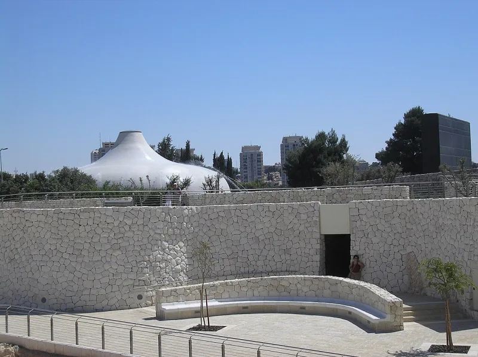
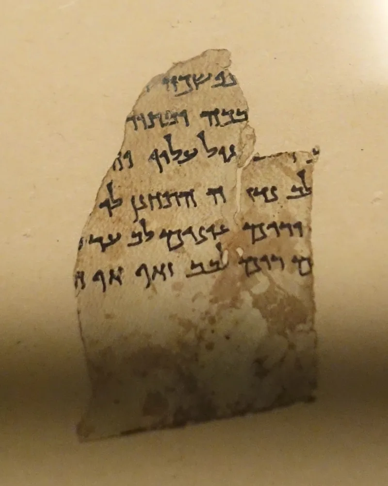
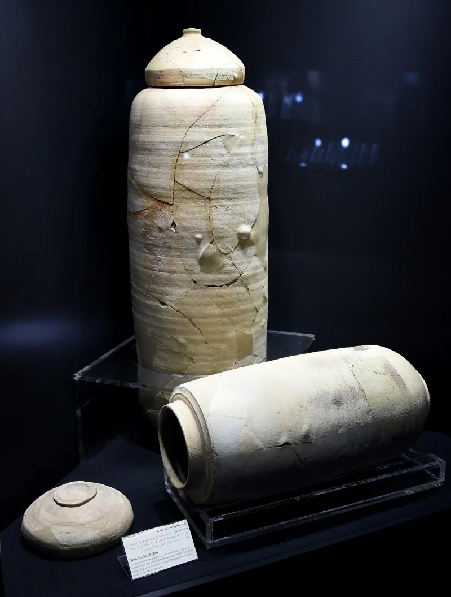

Jewish sources grant this themselves. You can make the point from their own books.
A common claim is that Christians invented the Messiah they wanted, then read him backwards into the Old Testament. It sounds reasonable.
It is also checkable, because we have Jewish writings from before Jesus was born.
A scroll fragment called 4Q521 describes a Messiah under whom the blind see and the dead are raised. It is Jewish.
It was written before Jesus. And it is almost word for word what Jesus later sends back to John the Baptist in Matthew 11:5.
The Psalms of Solomon, written roughly a century before Jesus, describe a king from David's line who cleanses Jerusalem and gathers the tribes. The expectation was alive, detailed, and datable.
It was not made up afterwards.
Very strong. These are Jewish documents, dated by scholars who have no stake in the Christian conclusion.
It removes the "you invented it later" objection before it can be raised, using evidence that came out of a cave in 1947.
"Have you read 4Q521? It sounds a lot like Matthew 11, and it's older than Jesus."



Hope was everywhere then, which is why so many claimants rose, and all failed.
This reply concedes the expectation, then turns it around. Yes, first-century Judea was full of messianic hope. That is exactly why there were so many claimants — Theudas, the Egyptian, and later Bar Kokhba. All of them failed the same test.
The main expectation was a royal, national deliverer. Psalms of Solomon 17 describes a conquering king who clears Jerusalem of gentiles. As for 4Q521, it is fragmentary, and its wonder-worker may be describing God's own acts rather than the Messiah's.
On this reading Jesus matched the small motifs and failed the central ones. No throne. No exiles gathered. No peace. No rebuilt Temple. And the fever of that era, as Sanhedrin 97b warns, is just what produced the false-messiah problem.
Conceded and datable: 4Q521 was sealed in a cave before Jesus was born.
The conceded fact is powerful on its own. We have datable Jewish texts, written before Jesus, expecting an anointed one who heals, raises the dead and preaches good news to the poor. Luke 7:22 has Jesus answering John's question — 'are you the one?' — in that same vocabulary.
Make 4Q521 the centrepiece. It cannot be a Christian forgery, because it was sealed in a cave before Jesus was born. That one fact removes the 'you invented it afterwards' objection for good.